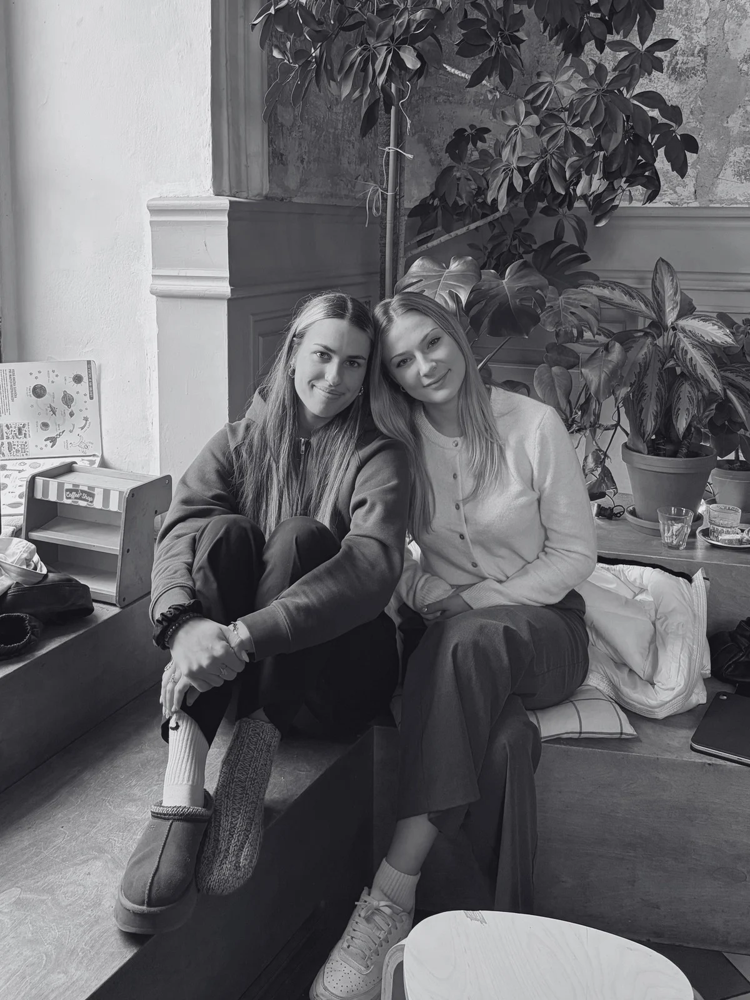
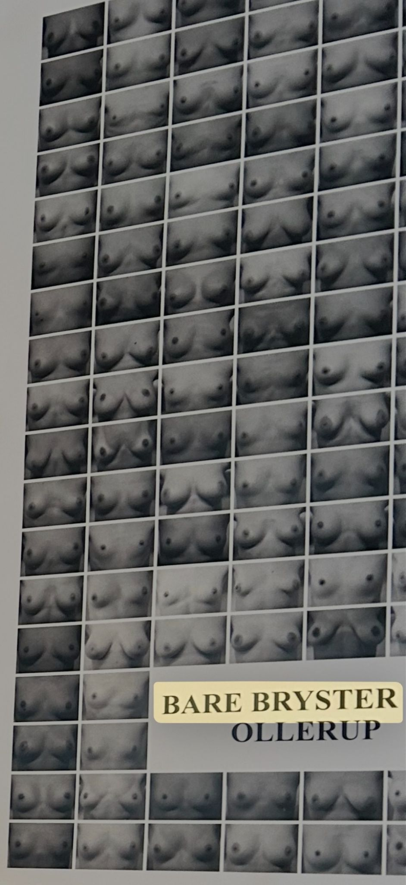
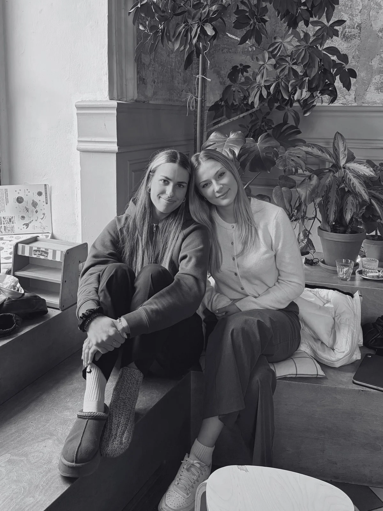
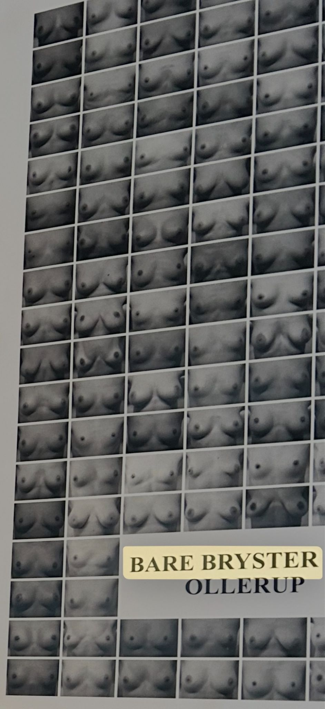
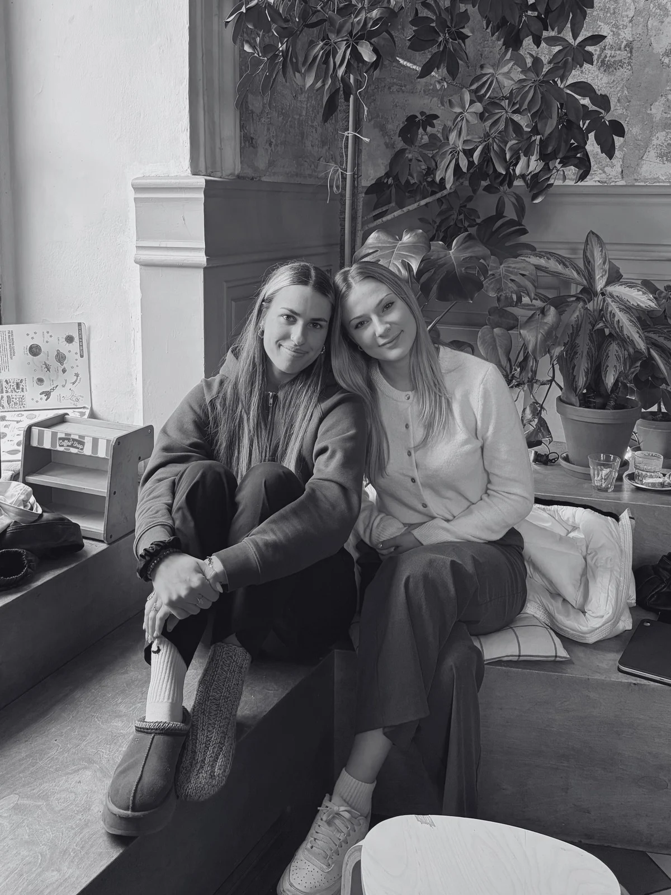
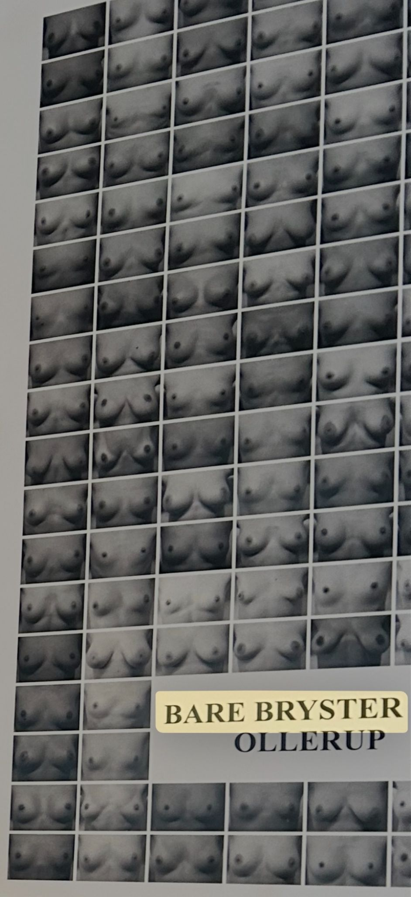

"brave enough to be bare"
Zvyšování povědomí o rakovině prsu, podpora sebevědomí žen a sběr prostředků na výzkum a léčbu.
Zakladatelky

 



"brave enough to be bare"
Zvyšování povědomí o rakovině prsu, podpora sebevědomí žen a sběr prostředků na výzkum a léčbu.

